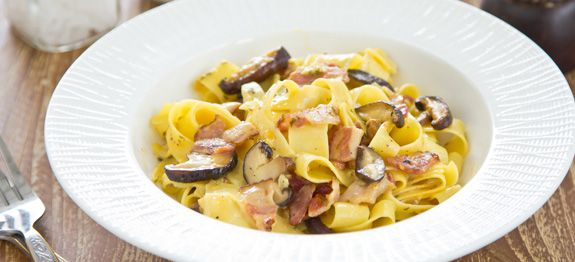

Carbonara al funghi

Ingredients
- 4x Rashers streaky bacon, chopped
- 10g dried porcini mushrooms
- 4x closed cip mushrooms(25g each), thinly sliced
- 90g of value spaghetti
- 1 egg, beaten
- 30g of Parmesan cheese, grated
- 1 tsp olive oil
- 1/2 x small garlic clove, finely chopped
Methods
- Serves: one
- Difficulty: Easy
- Cost: £2.06 per serving
- Prep. Time: 5 mins
- Cooking Time: 25 mins
- Soak the porcini mushrooms in hot water for 20 minutes. Drain, chop and set aside.
- Mix the beaten egg and the two thirds of the Parmesan cheese in a large bowl to make the carbonara sause. season with salt and pepper.
- Cook the spaghetti according to the packet instructions.
- Meanwhile, heat the oil in a frying pan and fry the bacon for 3 minutes. Add the fresh mushrooms, porcini mushrooms and garlic and cook for a further 3-4 minutes, stirring frequently.
- Drain the spaghetti, reserving 1tbsp of the cooking water. Immediately add the pasta to the Carbonara sauce as well as the reserved cooking water, bacon and mushrooms.
Toss it all together with two forks. (The egg will be cooked by the heat of the pasta, and the sauce will cling to the strands.) Serve immediately topped with the remaining Parmesan cheese.
Recipes like this one that involve raw or lightly cooked eggs should always use eggs that are as fresh as possible and have been stored according to the packaging guidelines.